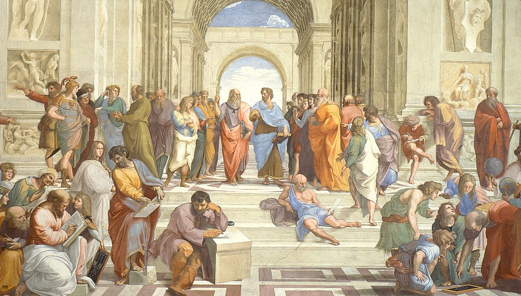

Image Slideshow
May 24, 2023


Image Slideshow
This is an image slideshow that I built using Javascript. This whole website was built with the help of UTG Academy's intro to web dev course. UTG academy is an afterschool program for kids wherein we teach the following;
- Game development using Python
- Game development using Unity
- Web development using HTML, CSS, and JavaScript
- Robotics
- Data Analysis
- Computer Science
An ancient greek aphorism to live by
May 19, 2023
We are what we repeatedely do
- Aristotle1
While I was on vacation in Greece I bought a coffee mug with this pearl of wisdom written on it. I thought it was clever because of course, the morning coffee is a well-known daily ritual for many. But I also thought it would act as a good daily reminder.
- The reminder is that my current situation in life is largely the result of my previous actions.
- The reminder is that I can guide my life towards a desirable future by repeatedly doing things that get me closer to that future state.
- The reminder is that positive change doesn't require a herculean effort, it simply requires small, consistent, repeated decisions to change.
Now the concept that making a small consistent effort over time in order to acheive great things isn't foreign to me;
I've heard it expressed in a number of different ways. Where you're attention goes, energy flows, and so goes
the direction of your life
, is one that I've heard before. Or the notion of doing at least one thing every day
that progresses you towards a goal, and keeping track of the streak on a calendar.2
However for some reason seeing it being worded so simply really struck a chord with me.
We are what we repeatedely do
I've really taken this bit of wisdom to heart since learning about it. I'm making a consistent effort on doing things that make me proud to be who I am. One of those things is working on skills and projects related to my career. 3 of those skills are HTML, CSS, and JavaScript; and this website is one of those projects! Currently I am a data analyst / business analyst. I also assist with software reliability monitoring. I'd like to one day move toward data engineering / data science / solution architecture. And this aphorism has helped me believe that if I apply myself and learn a little bit every day then I will be able to get there!
1. I later learned that what I love most about this aphorism - it's simplicity and eloquence - actually can't be attributed to Aristotle. It turns out the Will Durant, author of a 1926 book "The story of Philosophy", was paraphrasing in is own words what he thought was the essence of one of Aristotle's many teachings. So thank you Will Durant! 2. Apparently Jerry Seinfeld did with his goal of creating what became one of the most watched sit coms of all time.